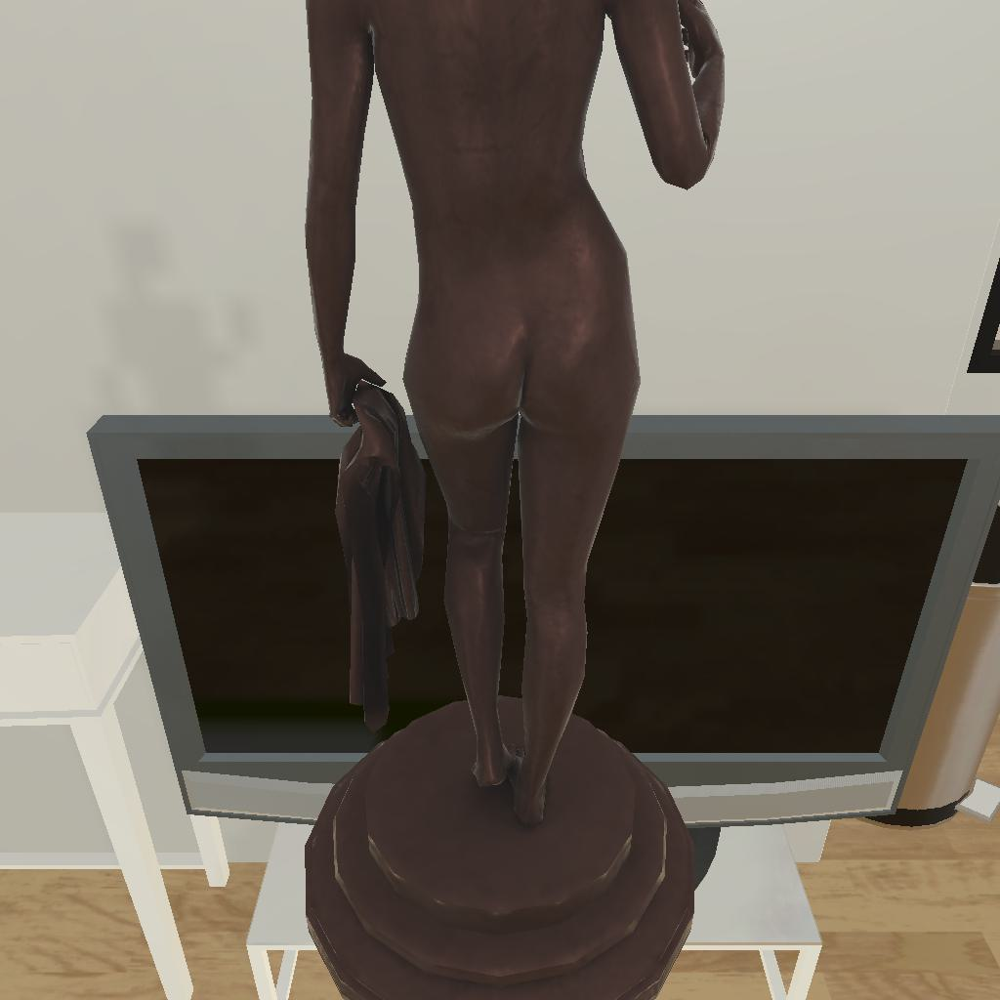

---------------------------------------------------------task: 4---------------------------------------------------------
--------------------------------------------------------------------------------------------------------------------------------------------------------------------
--------------------------------------------------------------------------------------------------------------------------------------------------------------------
Step:--------------------------------------------------------------------------15-------------------------------------------------------------------------------
----------------------------------------
VLM Prompt:
Image1:
**Instruction**
1. Analyze the provided image to identify all visible household objects, focusing on those relevant to the task description "examine the statue with the floorlamp."
2. Use the analysis of the image and the task hint "The agent must find an object of the desired type, locate and turn on a light source with the desired object in-hand." to answer the question: what is the most reasonable action in the choices for the task description "examine the statue with the floorlamp"?
4. Decide and write the answer using the template: The answer is: (i): , where i is the real number. If there is no desired object in the image, search every place based on **Initial Observation** to find the object. And if no one is exactly correct, choose a similar answer.
**Initial Observation**
You are in the middle of a room. Looking quickly around you, you can see armchair (1), coffeetable (1-2), sidetable (1), garbagecan (1), drawer (1), sofa (1), diningtable (1)
**Answer Choices**
(1): go to armchair 1
(2): go to sidetable 1
(3): go to garbagecan 1
(4): go to drawer 1
(5): go to sofa 1
(6): go to coffeetable 2
(7): go to diningtable 1
(8): put statue 1 in/on coffeetable 1
(9): examine coffeetable 1
**Answer**
Let's think step by step by following the instructions.
----------------------------------------
----------------------------------------
Original Response:
Image Analysis:
- The image provided shows a statue holding a floorlamp. The statue is the only household object visible in the image that is relevant to the task description.
Task Hint Analysis:
- The task hint suggests that the agent must find an object of the desired type (the statue) and locate and turn on a light source (the floorlamp) with the desired object in hand.
Based on the analysis and the initial observation, the most reasonable action for the task description "examine the statue with the floorlamp" would be to first locate the statue (which is already in the image) and then find a way to turn on the light source (the floorlamp).
Answer Choices Analysis:
- Options (1) to (7) involve going to various furniture items, which does not directly relate to the task of examining the statue with the floorlamp.
- Option (8) involves putting the statue on the coffee table, which is not relevant as the statue is already in hand and the task is to examine it with the floorlamp.
- Option (9) involves examining the coffee table, which is also not relevant to the task.
The Answer is: None of the provided answer choices directly address the task of "examine the statue with the floorlamp." However, since the statue is already in hand, as seen in the image, the agent should find a way to turn on the floorlamp. Since none of the options provide this action, the most similar answer would be to examine the coffeetable (9) in case the switch or means to turn on the floorlamp is located there.
The answer is: (9): examine coffeetable 1.
----------------------------------------
----------------------------------------
>>> Refine Original VLM Response and Get Pure Action: examine coffeetable 1
----------------------------------------
-----------------------------------------------------------------
Running time: 269.7026357650757 seconds
Total Money: 1.2769499999999998
-----------------------------------------------------------------
-----------------------------------------------------------------
Text Observation:On the coffeetable 1, you see a television 1.
-----------------------------------------------------------------
UNSUCCEED